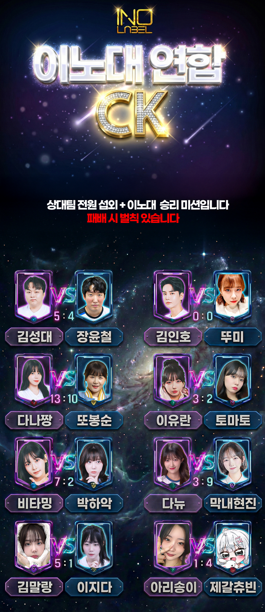

LIVE PRODUCTION · UI
대형 콘텐츠 방송 UI 구축
스코어, 스폰서, 진행 정보를 한눈에 읽을 수 있도록 화면 체계를 설계하고 실제 방송 환경에 적용했습니다.
- 현장 정보 우선순위 설계
- 방송용 그래픽 제작
- 실시간 송출 환경 적용
SELECTED PROJECTS
요청받은 한 장의 이미지부터 라이브 현장과 채널 운영까지, 목적에 맞는 해결책을 만들었습니다.
스코어, 스폰서, 진행 정보를 한눈에 읽을 수 있도록 화면 체계를 설계하고 실제 방송 환경에 적용했습니다.
대형 이벤트의 방송 흐름과 후원 기록을 동시에 모니터링하며, 종료 후 전체 후원자 정산까지 연결했습니다.

정보 전달과 콘텐츠의 분위기를 함께 고려한 비주얼 자산을 제작합니다.

채널의 톤앤매너를 유지하면서 모바일에서도 빠르게 읽히는 구성을 만듭니다.
COLLABORATION
편집, 썸네일, 풀영상, 방송 세팅 등 프로젝트별 역할로 협업했습니다.
 감스트GAMST
감스트GAMST 장지수
장지수 김인호TV
김인호TV 김성대
김성대 쥬쥬쥬세요
쥬쥬쥬세요 한아밍
한아밍